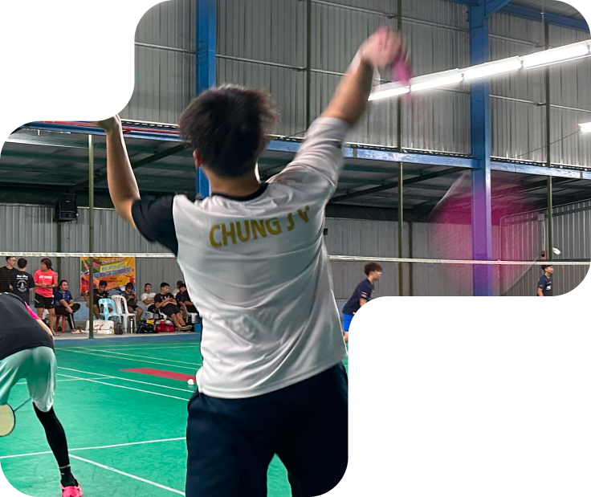

AI Growth Technology Specialist · Four Media Singapore
End-to-end SEO, AEO/GEO foundations, websites and campaign landing pages, analytics, AI tools and automation workflows.
My work sits between design, development, launch operations and client support. That range helps me build websites that are polished, practical and easier to maintain.

I graduated in Software Engineering from Curtin University Malaysia and developed my career through agency and client website work. I enjoy translating a brief or design into a responsive site, solving the technical issues around launch, and supporting the result after delivery.
Outside development, I enjoy badminton and served as President of the Curtin University Malaysia Badminton Club. That leadership experience shaped how I approach teamwork, communication and responsibility.
End-to-end SEO, AEO/GEO foundations, websites and campaign landing pages, analytics, AI tools and automation workflows.
Promoted from Web Developer. Delivered frontend and backend work, collaborated with designers on animations, researched suitable effects, mentored junior developers and reviewed code.
Website development and deployment, hosting, domains, DNS, SSL, business email and technical troubleshooting.
Website enhancements, backend configuration, content updates and user interface improvements across client projects.
Built a foundation in software development, testing, problem solving and technical communication.